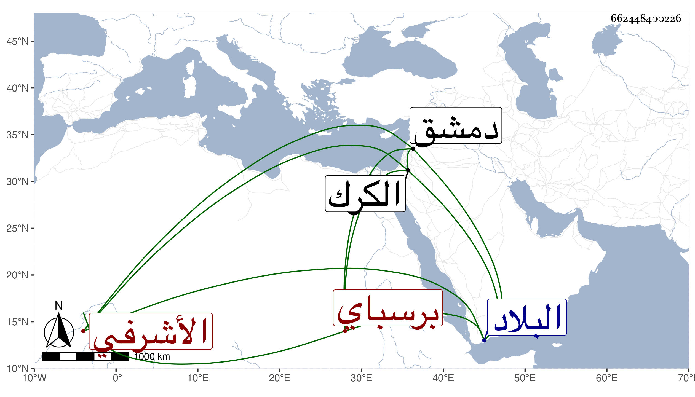

0902Sakhawi.DawLamic.ITO20230111-ara1.EIS1600.662448400226
Biography ID: 662448400226
1103
شاذ بك الأشرفي برسباي ويعرف بشاذبك بشق كان من صغار مماليك أستاذه وأخرج بعده إلى البلاد الشامية وتنقل في عدة ولايات متخللا ذلك ببطالات إلى أن صار بأخرة أمير مائة بدمشق ودوادار السلطان بها وسافر أمير الركب الشامي ، فمات في رجوعه بالقرب من الكرك أواخر المحرم سنة ثلاث وسبعين وقد زاد على الخمسين .
